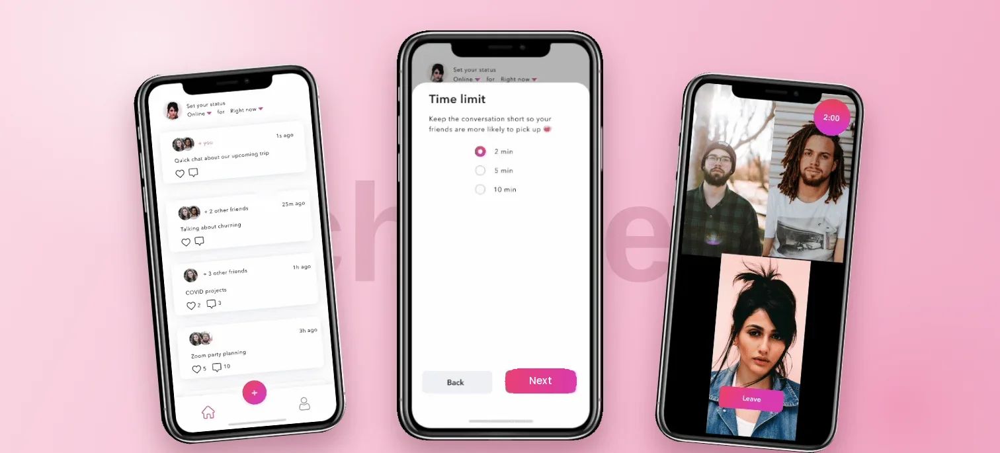
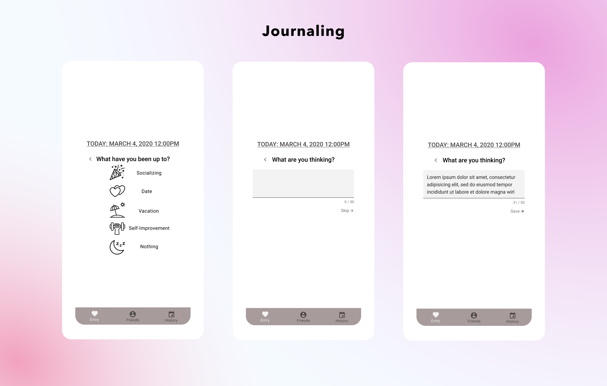
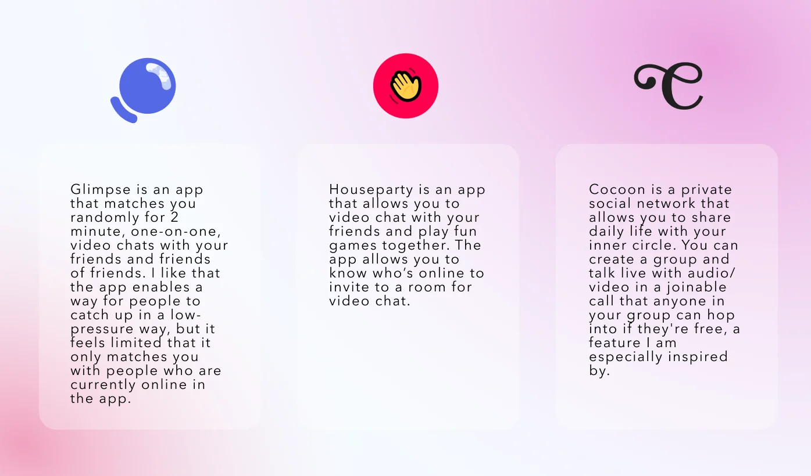
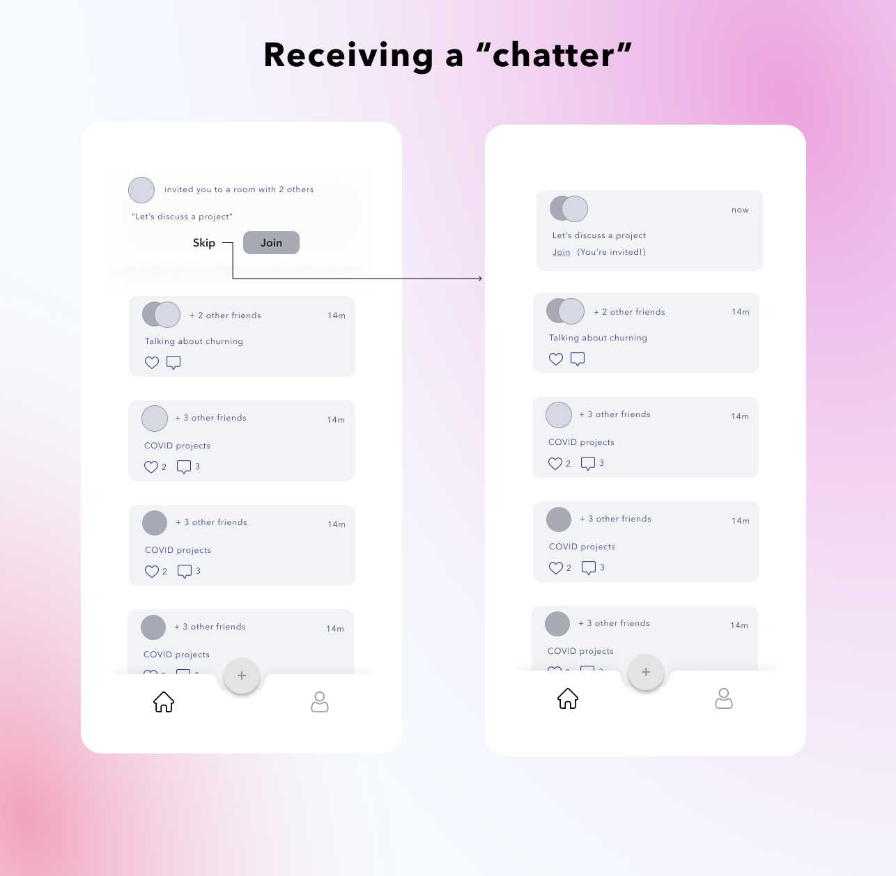

An early solo concept exploring a lighter way for friends to catch up. The artifacts show two directions: a shared journal and short video rooms. This retrospective focuses on the design tradeoff between composing an update and starting a conversation.
ROLEProduct designer · solo
PROJECTPersonal concept
TIMELINE1 month · March 2020
TOOLSFigma · Whimsical · Miro
What it isShort video rooms with friends: choose a topic and time limit, then save the call's metadata to a shared feed.
What changedA shared-journal direction became a short-call direction. The comparison below explains that shift as retrospective design reasoning, without claiming a validated research result.
StatusUnshipped concept The original prototype lets callers choose a time limit. A fixed two-minute alternative appears only in the later reflection. Neither establishes a usability result.
Retrospective concept: the original research records are not available with this case study. Participant counts and purported verbatim feedback are omitted. The final prototype was not usability-tested.

THE SHAPE OF THE PROJECTMARCH 2020
Concept
RETROSPECTIVE DESIGN STUDY
2
CONCEPTS, ONE PIVOT
Time limit
CALLER-SELECTED IN THE ORIGINAL
CALLS FELT LIKE PLANS. TEXTS FELT LIKE WORK.
In March 2020, social life moved onto screens almost overnight. I wanted to find a lighter way for friends to catch up without scheduling a long call or writing paragraphs of updates.
Early working notes and planning persona
WAS IT THE CALL, OR THE SETUP?
The working map below organizes concerns around writing updates, finding time to call, and catching up with context. It is included as an early design artifact; it does not establish participant counts or a representative finding.
Catching up is hard because context gets lost, so conversations stay superficial.
WORKING HYPOTHESIS 01
Calling bonds more and tires less than texting, but scheduling it is the chore.
WORKING HYPOTHESIS 02
Working synthesis mapEarly notes grouped around calls, text, and catching up. Research provenance is not established by this board.
ONE BUSY FRIEND, MANY PEOPLE TO UPDATE
Christy is a planning persona for a busy student keeping up with long-distance friends. I use this scenario to examine the effort each concept asks of the person; it is not a verified participant profile.
Planning personaA scenario used to explore the concept, not a research finding.
“How might we redesign texting and calling to fit long-distance friendships?”
THE HMW BEHIND BOTH IDEAS
FIRST TRY: A SHARED JOURNAL
My first idea was a private journal shared with selected friend groups. One update could reach everyone, and nobody had to reply. I borrowed low-effort entry patterns from Tiny Thoughts and Daylio, then added group sharing and reminders for friends someone had not contacted lately.
Prior artJournaling & relationship trackers. Concept one borrowed their low-effort update pattern.

DOES A JOURNAL REDUCE THE EFFORT?
Looking back, the journal still asks someone to compose an update. Two design questions explain the weakness of that direction:
Could a call remove the work of composing a written update?
RETROSPECTIVE DESIGN QUESTION
Does the journal reduce effort, or simply make the same task look easier?
RETROSPECTIVE DESIGN QUESTION
A shared journal reduces repeated writing, but does not remove composition. The call direction explores a different tradeoff: less composition in exchange for coordinating attention. The time-limit mechanic would need testing before claiming it makes calls easier to start.
SECOND TRY: SHORT CALLS
The project-era inspiration board compares Glimpse's short-call pattern with drop-in rooms from Houseparty and Cocoon. My original screens adapt those patterns to existing friendships and let the caller choose a time limit.
Start a chatter: open a room with a topic and a caller-selected time limit
Save a chatter: post the call's metadata (never a recording) to your feed
Join a chatter: hop into a friend's live room from the feed
Receive a chatter: answer now, or pass without guilt

Prior artGlimpse's 2-minute cap and Houseparty's drop-ins, borrowed and re-aimed at close friendships.

COULD A CAP MAKE A CALL EASIER TO START?
The final screens let the caller choose a time cap. This adds flexibility, but leaves a question: can a recipient still judge the commitment at a glance? The case does not establish a participant finding for that choice.
Can a recipient tell how much time a call will take before answering?
OPEN PRODUCT QUESTION
What does a saved feed entry offer once its live room has ended?
OPEN PRODUCT QUESTION
THE FINAL CONCEPTPROTOTYPE, IN MOTION
01
Start a quick chat
Create a room, add a topic and a limit, invite friends.
02
Keep a log of memories
The call's description and participants go to your feed for friends to react to.
03
Join the conversation
Drop into a friend's live chatter from the feed.
AN OPEN MECHANIC
The original screens include caller-selected time limits and persistent feed entries. Room lifetime remains unresolved: what can someone join after a room ends, and when should an ongoing badge disappear?
This later proposal explores a fixed two-minute room instead. It is a separate alternative, not the behavior implemented in the 2020 prototype:
Hard stop: end the live room at the chosen limit and remove its join action.
Extend by consent: offer a short extension only if everyone agrees; this makes the time commitment less certain.
Start again: let a saved entry invite its original participants into a new room, rather than imply the old room is still live.
I would test the hard stop and a separate invitation to start again. A saved entry would retain call metadata, never a recording. These are proposed mechanics, not changes made to the original prototype.
WHAT IS STILL UNPROVEN
The high-fidelity prototype was never tested. The main question is still open: does a short time limit make someone more likely to answer, or does it make the call feel disposable?
The study this concept still needs:
Observe pairs of friends starting, receiving, and revisiting a call. Check whether they understand the time commitment and whether a saved entry is still joinable. A later diary study would be needed to understand real use over time.
WHERE IT LANDED
The two directions make the tradeoff visible: asynchronous updates require composition; live calls require shared attention. The next step would be testing which commitment friends are willing to make, not adding more screens.